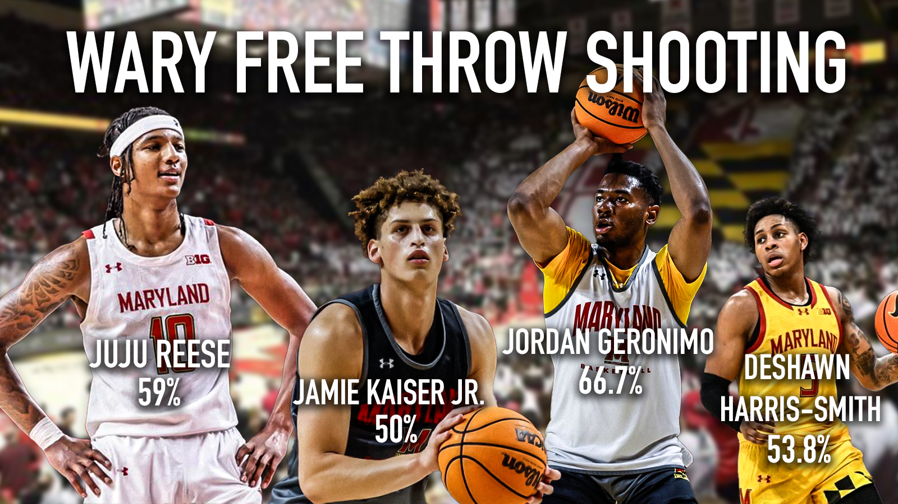
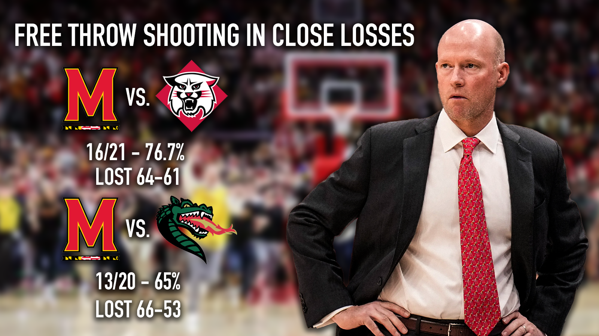

The answer to Maryland men’s basketball's offensive struggles starts at the free throw line
By Ricky Podgorski
It’s no question, that Maryland men’s basketball is struggling on the offensive side of the ball, shooting just 39.3% from field goal range, but the answer could be from the charity stripe.
The Terps are shooting 69.1% from the free-throw line, their lowest percentage since the 2016-2017 season.
Although the free throw at its core is just one point, in close games they are crucial to a basketball team's ability to win, and for Maryland men’s basketball, the free throw is proving to be critical in close games.
Free throws among rotational players
Some of the biggest stars and rotational players for the Terps are shooting the worst percentages from the line.
Big man Julian Reese, who has struggled with free throw shooting throughout his career, is shooting 59% from the line. That’s 10% under the team average.
Reese isn’t the only player experiencing woes from the line, as transfer Jordan Geronimo is only capitalizing on 66.7% of his free throw attempts.
The free throw bug transcends throughout the roster, affecting not just the veterans or the transfers, but the freshmen too. Freshman DeShawn Harris-Smith is shooting a staggering 53.8% and Jamie Kaiser Jr. is only at 50%.
No matter the position or year of the player, Maryland men’s basketball is significantly struggling from the line.
Free throws matter in close losses
The free throw is overlooked throughout many basketball games but is usually associated with late theatrics and heroics. But free throws are a key component of point distribution throughout games and matter most in close ones.
In Maryland’s closest losses, plenty of points were left at the line, which could be the game changer in a win or loss.
Against Davidson, the Terps shot one of their best percentages from the line at 76.7%, making 16 of 21 attempts. But lost to the Wildcats 64-61, a three-point margin. Just a few more free throws could have been a momentum changer or helped grab a win for Maryland.
In a similar outing against UAB, Maryland shot 65% from the free-throw line, only sinking 13 of 20 free throws. The Terps lost by three, 66-63. Again, another example of how just a few extra free throws could determine a win or loss in close games.
Bad Percentages in the big ten
As the Terps begin their journey through Big Ten play, they currently sit in tenth place in overall free throw percentage.
Partnered with the worst offensive numbers in the entire conference, missing free throws will lose Maryland more games in Big Ten play.
Many attribute success at the free throw line to a combination of good coaching and a player's mentality.
On the bright side, head Coach Kevin Willard saw an increase in free throw percentage every year from 2015-2022 in his former position as the head coach of the Seton Hall Pirates.
Willard has experience with bringing a low free throw percentage up, but this Maryland roster is a new one, with a lot of new moving pieces.
And for a team that has already fallen short of high expectations, it’s going to take a lot to change the mentality of a lot of these players.
In a home match against Rider, Maryland recorded a season-high 103 points, getting to the free throw line 45 times. Of the 45 attempts, 29 free throws were made, that’s 64.4%.
Rider currently sits at 1-7 on the year, and is not comparable to Big Ten talent. The Terps will almost certainly never get to the line 45 times again this season but it's crucial to capitalize on however many attempts they’re granted.
looking ahead
For a team that was projected just outside the AP top 25, the offensive struggles have been monumental. Until the Terps can find some rhythm from the three-point line and field goal range, they’ll need to develop a stronger free throw percentage.
Some games are decided by just a few points, and leaving those points at the charity stripe will only bring loss after loss. For Maryland to climb from the bottom of the Big Ten to stay afloat in the conference, it will have to start at the free-throw line.